令和8年度全国学力・学習状況調査の結果
結果の概要から、生徒の学習状況や学び方に関わる特徴を捉えます。
高校数学に求められる授業改善の視点
SECTION OVERVIEW
諸調査の結果を、生徒の学びを捉え、授業を問い直すための手掛かりとして考えます。
結果の概要から、生徒の学習状況や学び方に関わる特徴を捉えます。
高校生の意識や学習の実態を確認し、指導を振り返る視点を得ます。
複数の情報を関連付け、生徒の学びと組織的な授業改善へつなげます。
NATIONAL ASSESSMENT
結果の概要から、生徒の学びと授業改善に関わるポイントを確認します。
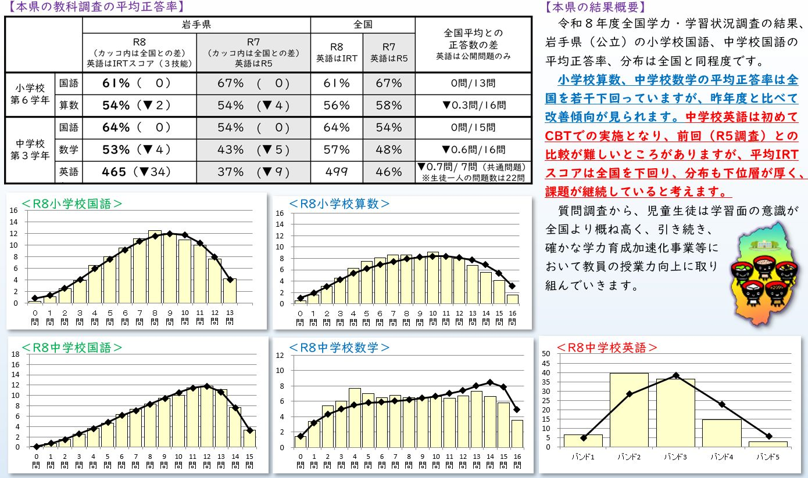
NATIONAL ASSESSMENT
結果の概要から、生徒の学びと授業改善に関わるポイントを確認します。
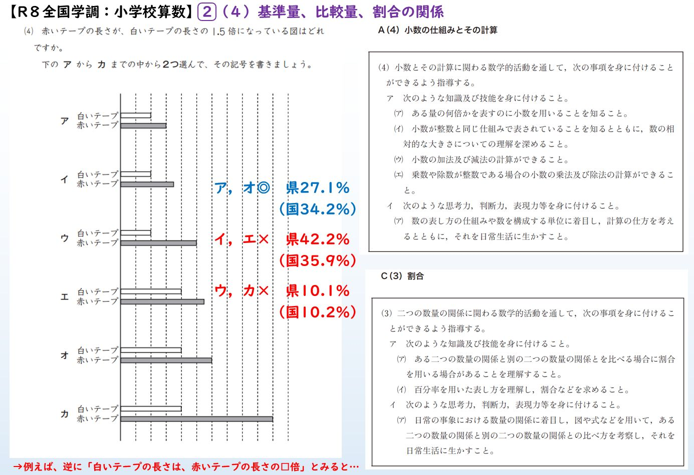
NATIONAL ASSESSMENT
結果の概要から、生徒の学びと授業改善に関わるポイントを確認します。
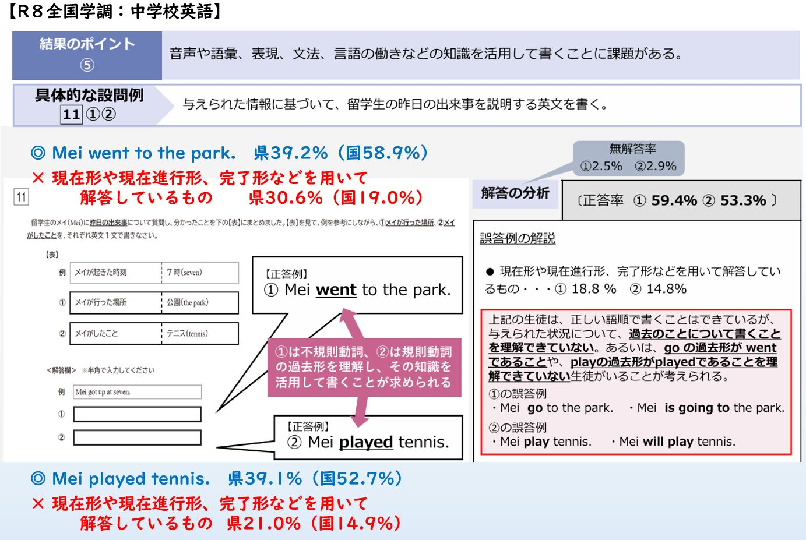
STUDENT ATTITUDE SURVEY
生徒の意識や学習の実態を、日々の授業や指導に引き寄せて考えます。
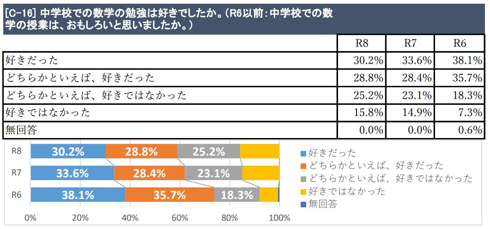
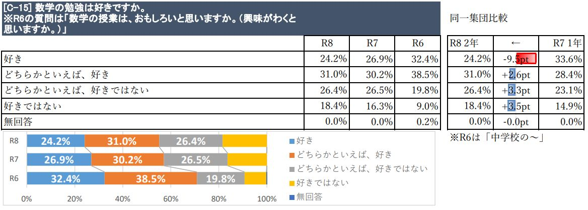
STUDENT ATTITUDE SURVEY
数学の授業に対する「分かる」という実感を、学年進行に伴う変化とともに捉えます。
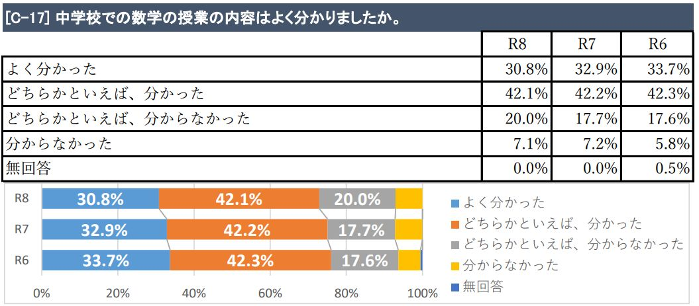
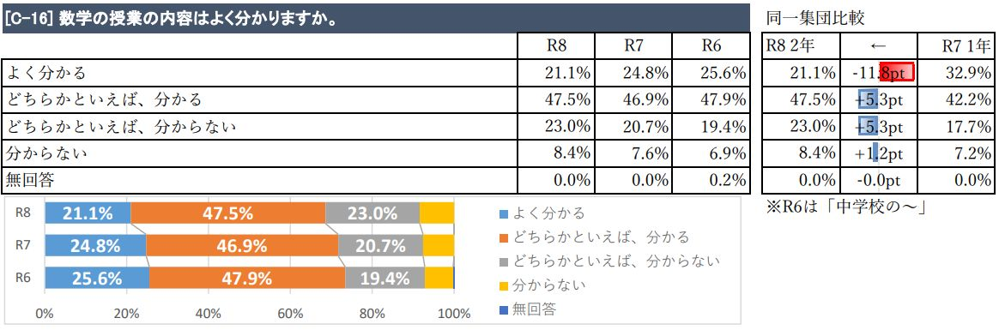
STUDENT ATTITUDE SURVEY
授業におけるICT機器の活用頻度を、校種や学年進行に伴う変化とともに捉えます。
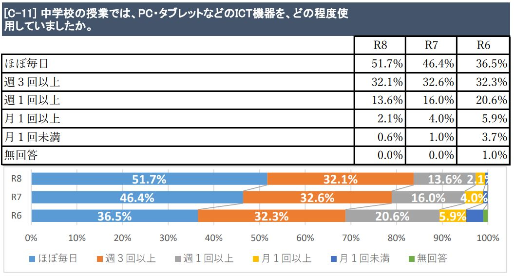
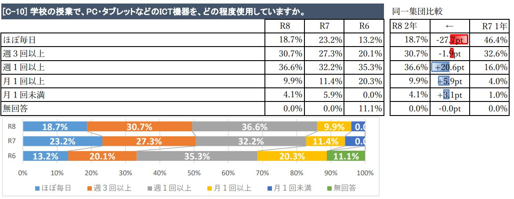
STUDENT ATTITUDE SURVEY
平日のスマートフォン等の利用時間を、学年進行に伴う変化とともに捉えます。
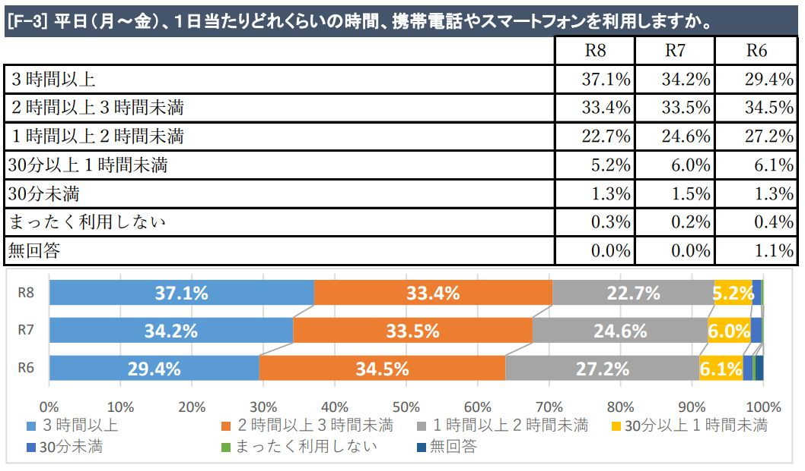
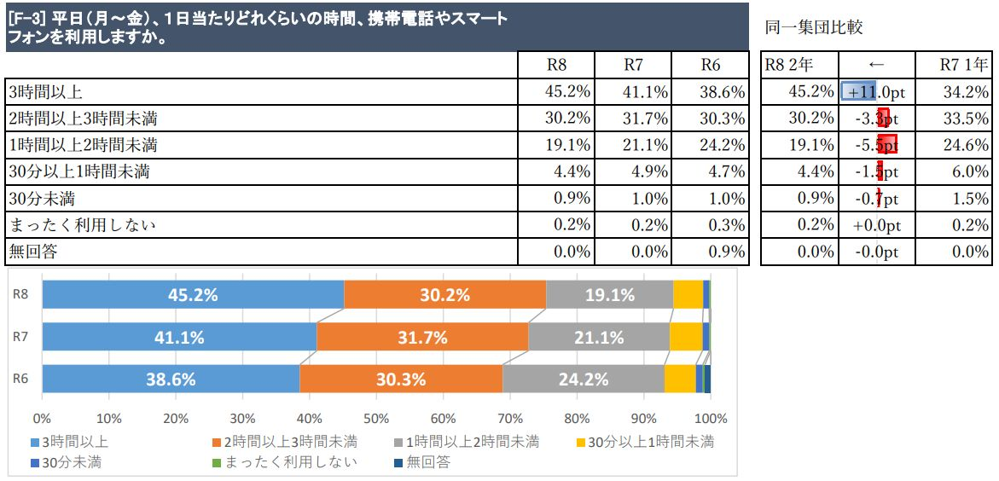
NEXT DIRECTION
丁寧な見取り、自動採点による業務量の削減、ビッグデータの取得を同時に実現し、指導改善につなげる取組が進んでいます。
解答類型から学校の指導上の課題を捉え、授業改善や教育施策の検討につなげる分析を始めています。
結果確認だけで終わらせず、複数データを関連付け、学校全体や教育施策における組織的な取組の改善につなげます。